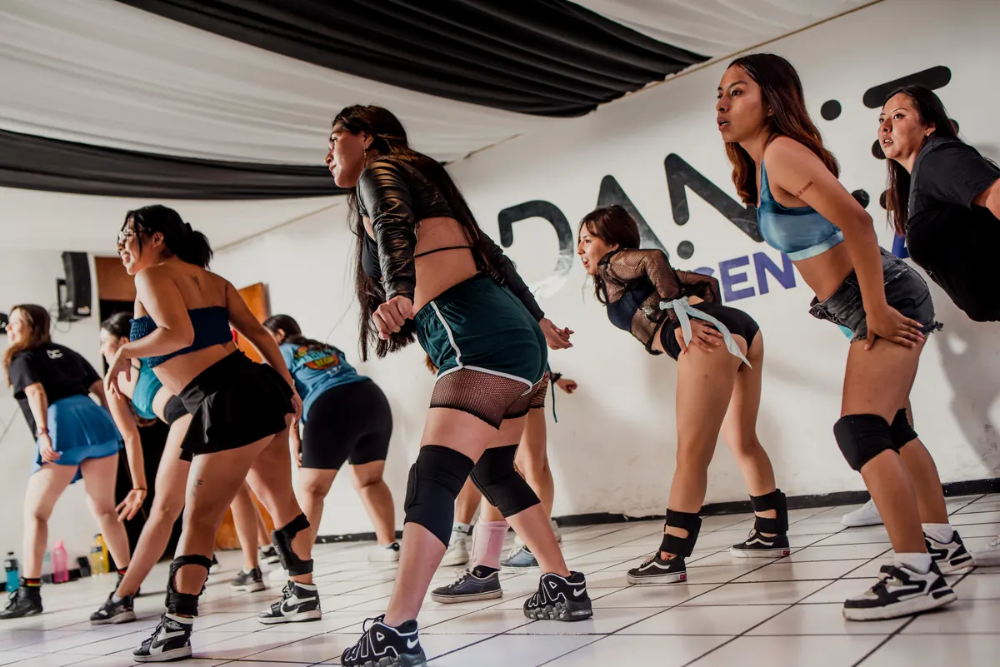
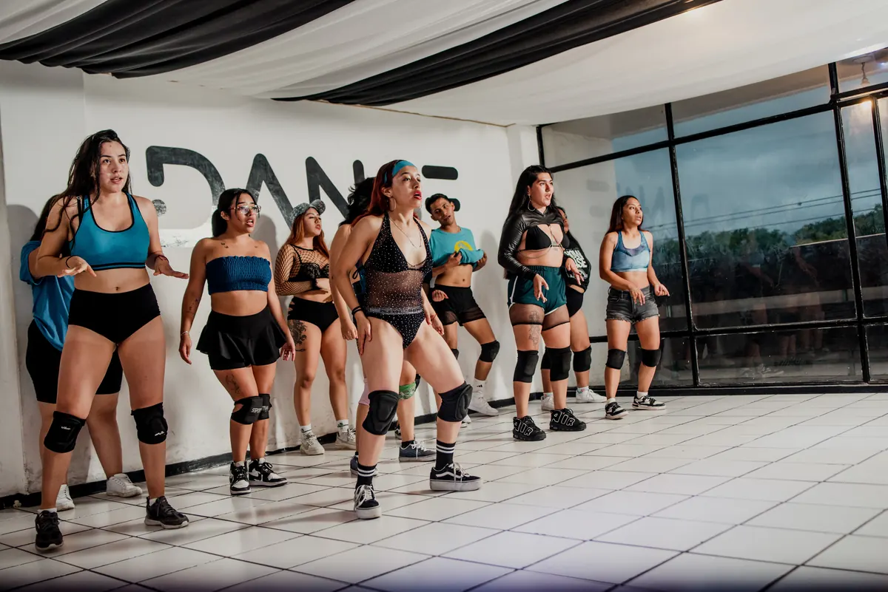
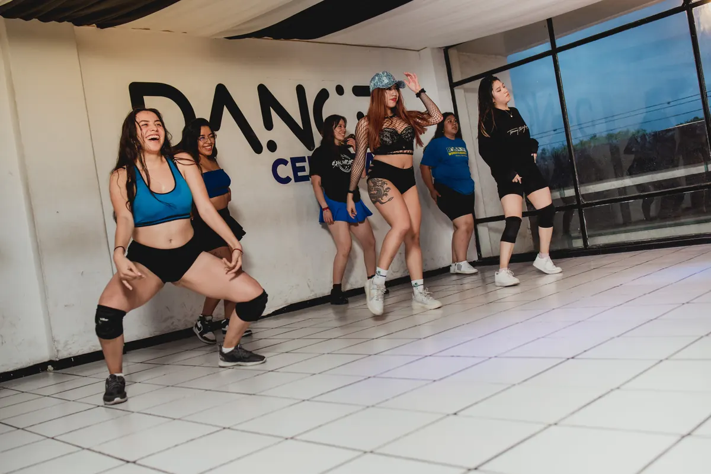

BAILE MODERNO
Coreografía, musicalidad y presencia escénica.
Trabajamos secuencias completas: cómo entra el cuerpo en la música, cómo se arma una coreografía y cómo se lleva al escenario.
Es el estilo que más se ve en nuestras presentaciones y shows.
Consulta horarios y costos

